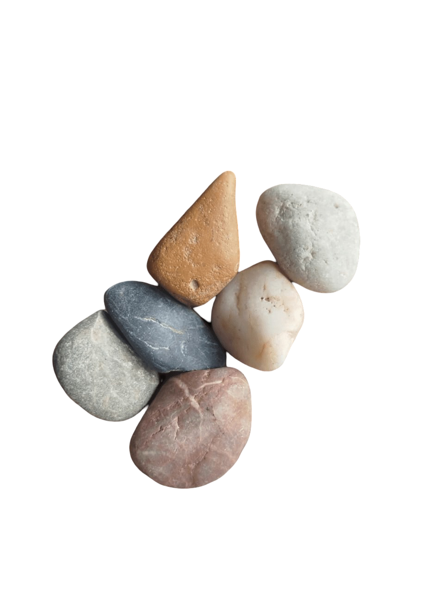
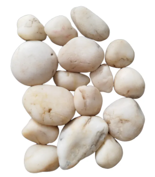
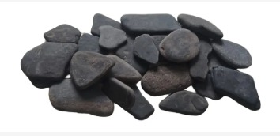
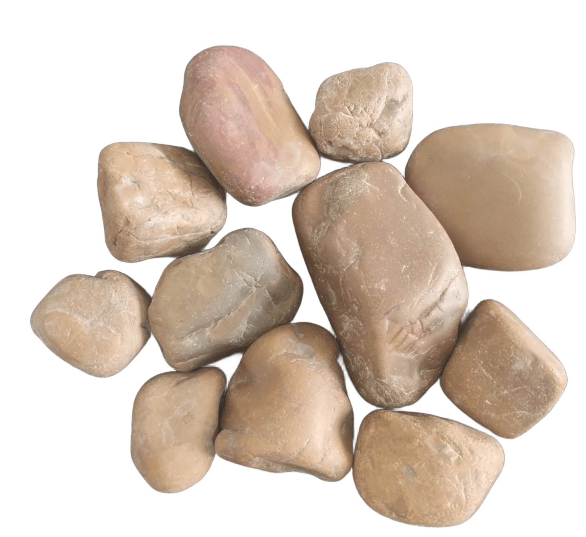
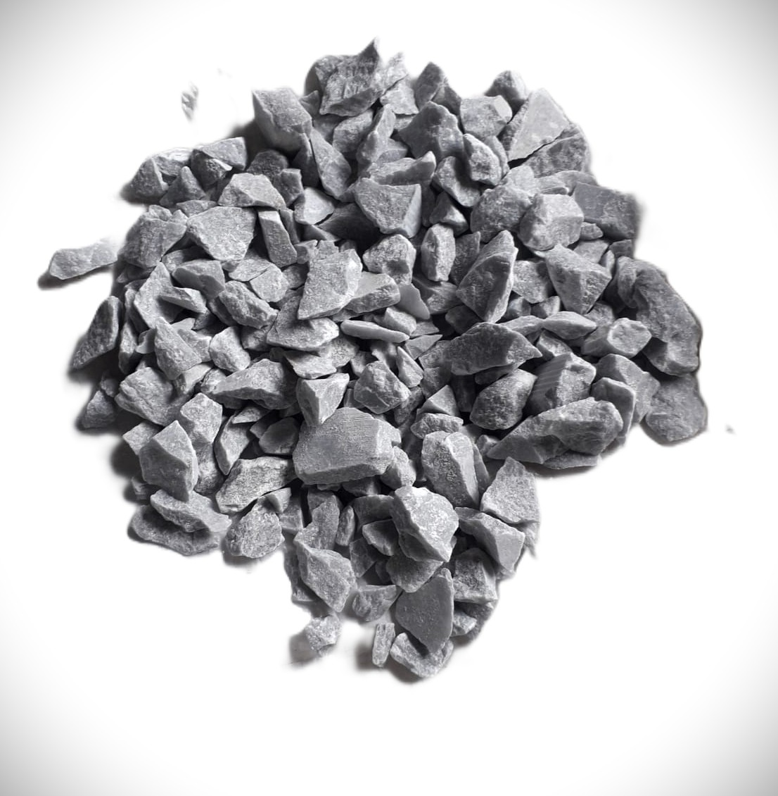
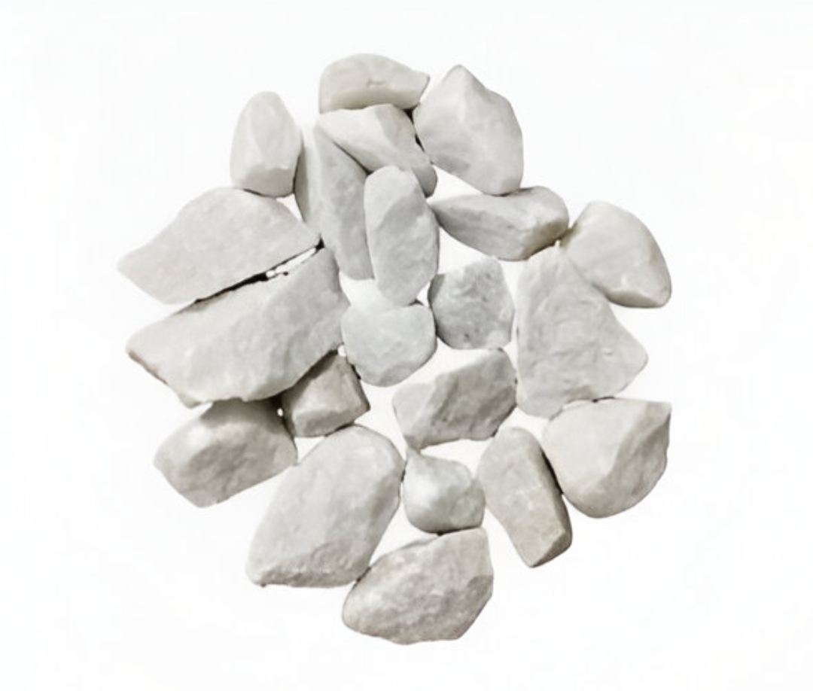
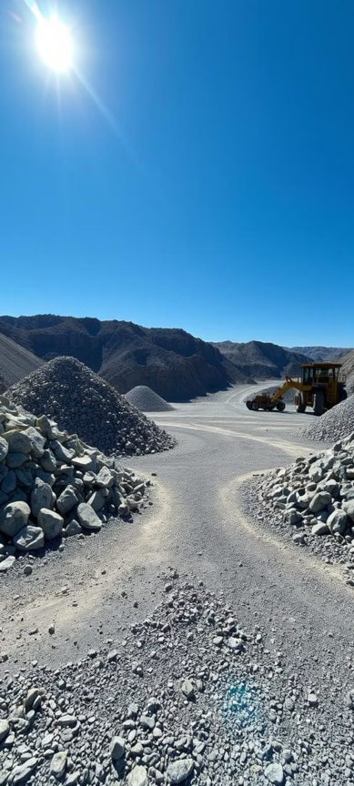
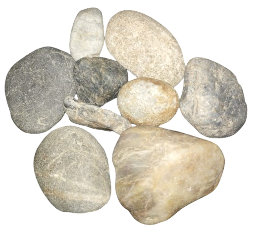
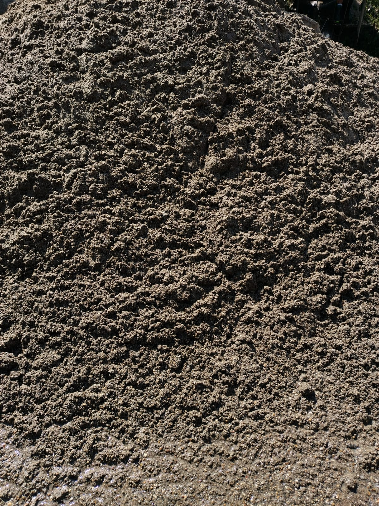
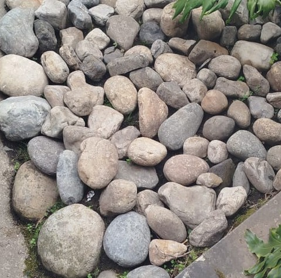

En Stones Supplies, somos tu aliado confiable en Bogotá para la selección y suministro de Piedra Decorativa Natural y Materiales de canteras de la más alta calidad. Desde el paisajismo y la creación de jardines, hasta la decoración y construcción en Colombia, nuestra pasión por la piedra nos impulsa a brindarte lo mejor del mercado.
Piedra Natural, Versatilidad en cada Proyecto

Piedra Multicolor 2 a 5 cm
Para jardines, terrazas y zonas de drenaje. 1 bulto ≈ 0.9 m²
Desde $26.000 / Blt 35kg
Piedra Blanca Crystal
Perfecta para jardines, materas y caminos. 1 bulto = 1 m²
Desde $27.000 / Blt 30kg
Piedra Plana Negra de Río
Elegancia y modernidad en jardines y superficies. 1 bulto = 1 m²
Desde $30.000 / Blt 30kg
Piedra Ocre Moderno
Elegancia y modernidad en jardines y superficies. 1 bulto = 0.8 m²
Desde $25.000 / Blt 30kg
Mármol Gris/Blanco
Ideal para jardines, paisajismo y exteriores. 1 bulto = 1 m²
Desde $26.000 / Blt 40kg
Mármol Blanco Jardinero 6-7 cm
Elegante para jardines y revestimientos de lujo. 1 bulto = 1.2 m²
Desde $30.000 / Blt 40kg
Triturado de Piedra 3/4" a 2"
Para construcción y mantenimiento de carreteras. Transporte incluido.
Desde $190.000 / Min 5 M³
Canto Rodado de Río 2" a 4"
Para drenaje, filtros y paisajismo en Bogotá. Transporte incluido.
Desde $190.000 / Min 5 M³
Arena de Río y Peña M³
Para mortero, nivelación y bases para césped artificial.
Desde $85.000 / M³
Piedra Bola 4" a 6" M³
Delimitar caminos, bordes de jardín y decoración. Transporte incluido.
Desde $190.000 / M³Calculadora y Cotizador
Selecciona el material, ingresa el área y calcula cuánto necesitas. Agrega los items a tu cotización y envíala por WhatsApp.
* Incluye 10% extra por merma. Precio sin transporte donde aplique.
Aplicaciones de Piedra Natural en Bogotá

Diseño de Jardines y Paisajismo
Crea espacios exteriores con encanto y durabilidad, desde senderos hasta muros decorativos con piedra.

Revestimientos de Muros y Fachadas
Dale un toque sofisticado a fachadas e interiores con la belleza y resistencia de la piedra.

Piedra para Construcción
Materiales robustos y confiables para cimientos, muros y estructuras con larga vida útil en Bogotá.
Lo que Nuestros Clientes Dicen
"Stones Supplies superó mis expectativas. La calidad de la piedra y la atención al cliente fueron excepcionales. Mi jardín luce espectacular."
— Ana M., Diseñadora de Interiores · Bogotá"Trabajar con ellos fue muy fácil. Encontraron exactamente el mármol que necesitaba para mi proyecto de paisajismo. ¡Profesionalismo total!"
— Carlos P., Arquitecto · Bogotá"La variedad de piedra y el asesoramiento experto hicieron la diferencia en mi proyecto de decoración. Altamente recomendados."
— Luisa F., Cliente residencial · Bogotá